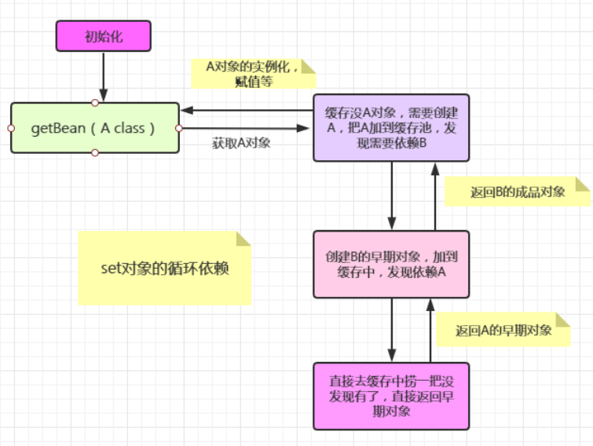
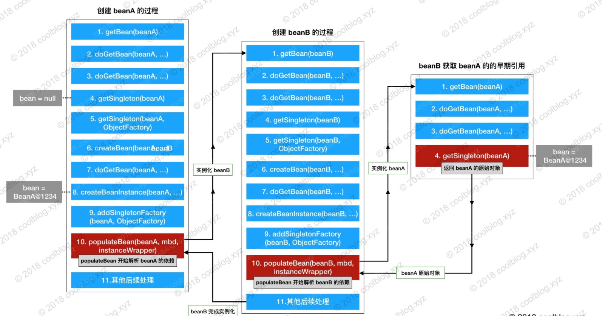

今天主要分享的是Spring如何解决循环依赖的？这个也是一个Spring的高频面试题。下面我们就从源码的角度去剖析下这个问题。
简介
在我们实际开发过程中，如果我们new出来的对象循环引用，那么就会死循环，直到OOM，然后挂掉。假如在线上发生，那么后果不堪设想。
我们都知道，我们自己new出来的对象压根就不在IOC容器中，IOC都不带我们玩。在IOC容器中的Bean都是经过IOC容器的加载进去的。具体可以移步
源码专题——Spring IOC 容器初始化解析（上）[1]
Spring的Bean创建过程
这里我们还是回顾一下，Spring的Bean的创建，首先创建早期对象（还没有实例化的对象），然后添加到早期对象
首先创建Bean实例的包装类，方便后面使用。
/**
* 真正的创建bean实例(这里创建实例包装类)，调用构造方法或者工厂方法
*/
instanceWrapper = createBeanInstance(beanName, mbd, args);
添加到我们的缓存中，这里就是我们的单例缓存池，解决循环依赖的关键所在。
/**
* 添加到我们的单例工厂中缓存起来
*
* 提早暴露早期对象 (还没有进行初始化的对象) 就是还没有进行赋值的对象就是早期对象
*
*/
addSingletonFactory(beanName, () -> getEarlyBeanReference(beanName, mbd, bean));
然后就是Bean的赋值，初始化Bean。
/**
* 给我们的Bean进行赋值
*/
populateBean(beanName, mbd, instanceWrapper);
/**
* 初始化bean
*/
exposedObject = initializeBean(beanName, exposedObject, mbd);
下面我们来具体的讲讲。
Spring如何解决循环依赖
Spring也不是说所有的循环依赖都能解决的，我们先抛出结果，然后透过现象看本质。一步步来分析为什么构造器和多例解决不了循环依赖，而只有set才能解决，又是什么原理呢？
我们知道，Spring的Bean创建先是对象的创建，然后是对象的实例化。并不是什么时候都是一来就创建对象，首先去缓存里面捞一波，如果捞到了就直接返回了的。前面讲过，实例化对象的过程很浪费性能的。
一级缓存->singletonObjects存的是完成创建的对象，也就是实例化了的对象。
二级缓存->earlySingletonObjects，存储早期对象
三级缓存->singletonFactory，在creatBeanInstance时候放入
protected Object getSingleton(String beanName, boolean allowEarlyReference) {
/**
* singletonObjects 这个就是我们大名鼎鼎的单例缓存池
*/
Object singletonObject = this.singletonObjects.get(beanName);
/**
* singletonObject == null 并且单例正在创建
*
* isSingletonCurrentlyInCreation就是个标识，标识这个bean是否正在被创建。
*/
if (singletonObject == null && isSingletonCurrentlyInCreation(beanName)) {
synchronized (this.singletonObjects) {
//去早期对象里面去获取，如果获取到了就直接返回了。
singletonObject = this.earlySingletonObjects.get(beanName);
if (singletonObject == null && allowEarlyReference) {
//如果早期对象没获取到，就去单例工厂里面获取
ObjectFactory<?> singletonFactory = this.singletonFactories.get(beanName);
if (singletonFactory != null) {
//如果单例工厂取到了 ，加到早期对象中，然后从单例工厂中移除
singletonObject = singletonFactory.getObject();
this.earlySingletonObjects.put(beanName, singletonObject);
this.singletonFactories.remove(beanName);
}
}
}
}
return singletonObject;
}
如果没捞到，那继续去父工厂中捞一波，如果拿到就返回。
/**
* 如果缓存中没有拿到，就去检查父工厂里面有没有
*/
BeanFactory parentBeanFactory = getParentBeanFactory();
如果还是没有，那只能自己创建对象了
/**
* 真正的创建bean实例了，调用构造方法或者工厂方法
*/
instanceWrapper = createBeanInstance(beanName, mbd, args);
把早期对象添加到我们的单例缓存池中
protected void addSingletonFactory(String beanName, ObjectFactory<?> singletonFactory) {
Assert.notNull(singletonFactory, "Singleton factory must not be null");
/**
* singletonObjects 单例缓存池
* singletonFactories 单例工厂
* earlySingletonObjects 早期单例对象
*/
synchronized (this.singletonObjects) {
if (!this.singletonObjects.containsKey(beanName)) {
this.singletonFactories.put(beanName, singletonFactory);
this.earlySingletonObjects.remove(beanName);
this.registeredSingletons.add(beanName);
}
}
}
好，到这里我们看个例子，假如我有两个对象 InstanceA 和 InstanceB
@Component
public class InstanceA {
private InstanceB instanceB;
public InstanceB getInstanceB() {
return instanceB;
}
public void setInstanceB(InstanceB instanceB) {
this.instanceB = instanceB;
}
}
@Component
public class InstanceB {
private InstanceA instanceA;
public InstanceA getInstanceA() {
return instanceA;
}
public void setInstanceA(InstanceA instanceA) {
this.instanceA = instanceA;
}
}
从容器中获取实例对象A
AnnotationConfigApplicationContext context =
new AnnotationConfigApplicationContext(BeanConfig.class);
context.getBean("instanceA");
我直接去getBean获取A实例，那么将会先去getBean（A class），然后缓存池获取不到，去创建A对象，然后把早期对象加入到单例缓存池。
这个时候发现A依赖了B对象，先去创建B对象，然后把B加入到单例缓存池；发现B又依赖A对象，去创建A，这个时候A已经在缓存池中了。直接返回早期对象的A。

从图中我们可以很清楚的看到，B对象的A属性是在第三步中注入的半成品A对象，而A对象的B属性是在第二步中注入的成品B对象，此时半成品的A对象也就变成了成品的A对象，因为其属性已经设置完成了。
以上就是set循环依赖的解决方案。
那么为什么多例解决不了循环依赖呢？
因为多例根本就没有缓存，更别谈早期对象了，我们的单例缓存池不是白叫的。
那么构造器呢？
我们再看看源码，创建bean实例的时候是在这里，我们继续进入里面
/**
* 真正的创建bean实例了，调用构造方法或者工厂方法
*/
instanceWrapper = createBeanInstance(beanName, mbd, args);
在这一步就进行构造注入，然而我们的早期对象暴露是在下一步，这里还没有暴露，所以解决不了循环依赖
// Candidate constructors for autowiring?
Constructor<?>[] ctors = determineConstructorsFromBeanPostProcessors(beanClass, beanName);
if (ctors != null || mbd.getResolvedAutowireMode() == AUTOWIRE_CONSTRUCTOR ||
mbd.hasConstructorArgumentValues() || !ObjectUtils.isEmpty(args)) {
//通过构造器进行诸注入
return autowireConstructor(beanName, mbd, ctors, args);
}
小结
对于整体过程，只要理解两点：
Spring是通过递归的方式获取目标Bean及其所依赖的Bean的；
Spring实例化一个Bean的时候，是分两步进行的，首先实例化目标Bean，然后为其注入属性。

结合这两点，也就是说：Spring在实例化一个Bean的时候，是首先递归的实例化其所依赖的所有Bean，直到某个Bean没有依赖其他Bean，此时就会将该实例返回，然后反递归的将获取到的Bean设置为各个上层Bean的属性的。
放图https://www.processon.com/view/link/5ecdff207d9c08156c68396d
为什么多例无法解决循环依赖
因为多例根本就没有缓存，更别谈早期对象了，我们的单例缓存池不是白叫的。
为什么构造器无法解决循环依赖
依赖的属性提前就被实例化了，并没有set构造中那种（工厂->半成品->成品）的整个过程。提前就直接返回成品了。所以自然缓存中没有半成品，无法解决循环依赖问题。
为什么不使用二级缓存
如果仅仅是解决循环依赖问题，二级缓存也可以，但是如果注入的对象实现了AOP，那么注入到其他bean的时候，不是最终的代理对象，而是原始的。通过三级缓存的ObjectFactory才能实现类最终的代理对象。
一级缓存能不能解决循环依赖问题
可以解决，但是因为初始化完成和未初始化完成的都放在这个map中，拿到的可能是没有完成初始化的，属性都是空的，直接空指针异常。